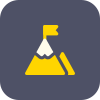

Césame vous ouvre les portes du digital
Bienvenue sur Césame, l’agence digitale spécialisée dans la création de site internet et le référencement naturel. Pour un accompagnement bienveillant, efficace et sur mesure, pour tous les budgets et tous les objectifs.
Demander un devisPourquoi choisir Césame ?
Google Analytics, Adwads, Tag manager, semrush ou encore acquisition traffic, si ce jargon technique vous fait bourdonner les yeux et les oreilles et que vous êtes perdu dans l’océan de sites web gratuits qui se ressemblent tous, Césame vous propose de vous accompagner dans la création de votre propre site, modelé à partir de votre entreprise, de votre histoire et de vos envies.

Stratégie digitale
Si vous avez peur que votre site reste à la traîne et n’apparaisse pas en premier dans les recherches de potentiels clients, les solutions de rédaction et d’audit SEO de Césame vous permettront de revenir sur le devant de la scène. Ensemble, nous établirons une stratégie marketing digitale adaptée à vos besoins afin de permettre le maximum d’acquisition de nouveaux clients.
Projet web sur mesure
Un site web sur mesure donc, mais pour tous les budgets. De la simple retouche à la stratégie marketing complète, site et référencement inclus, notre équipe évaluera avec vous la meilleure façon d’atteindre vos objectifs. Appli, refonte graphique de votre site web existant ou création d’une plateforme dédiée à votre activité sont autant de nos compétences que nous pourrons mettre à votre service.
Agence digitale Française
Nous sommes trois jeunes qui avons pris les Covid de front comme tout le monde. Confronté à l’éloignement, la solitude et le manque de place sur le marché l’emploi, nous avons eu envie creuser notre propre sillon pour combattre la morosité. Chez Césame nous prendrons le temps de construire avec vous l’autoroute du succès, du netlinking de votre blog vers un site tout neuf, ou de la simple optimisation de votre e-commerce. Prenez une grande inspiration et plongez avec nous dans l’univers digital à bord de votre site web sur mesure afin de bénéficier enfin des miracles d’internet.
Transformation digitale
Loin des yeux, loin du cœur ? Que vos portes sont temporairement closes à vos clients habituels ou que votre cœur de cible surfe déjà aisément sur le web, Césame vous permettra de combler la distance, grâce à un site, une appli, compatible sur ordinateur, téléphone ou tablette (responsive) tout en suivant au jour le jour le trafic sur votre site et le succès de vos produits et services grâce à des outils d’analyse sémantiques ou de e-monitoring comme Google AdSense que nous vous apprendrons à maîtriser.